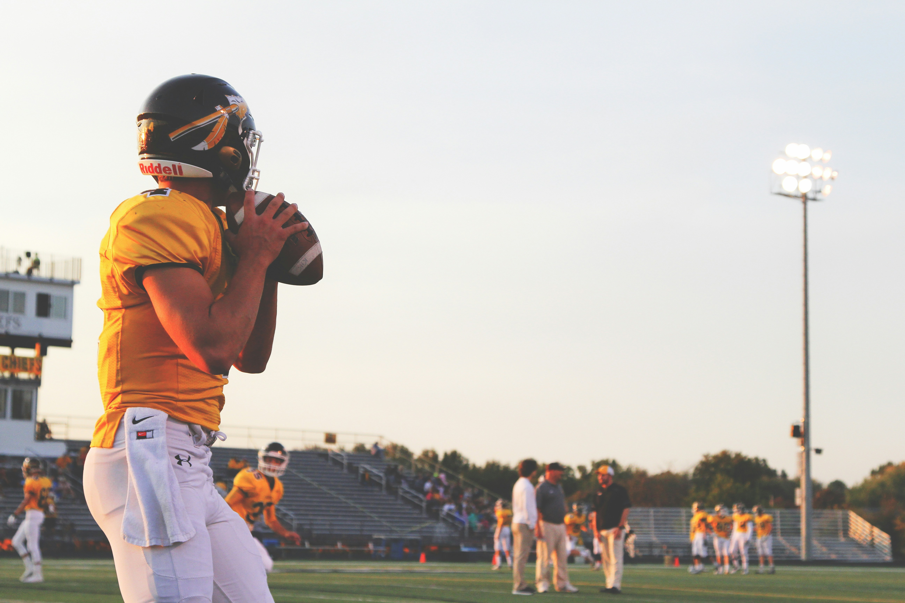

O surgimento do futebol na Inglaterra durante o século XIX foi um processo gradual que envolveu a consolidação de regras e a formalização de um esporte que já era praticado de formas variadas em diferentes localidades. Embora o conceito de futebol, com chutar uma bola, exista há séculos, foi a partir de 1836 que o jogo começou a se moldar para se tornar o que conhecemos hoje.
No início do século XIX, a Inglaterra estava passando por rápidas mudanças sociais e econômicas, impulsionadas pela Revolução Industrial. A urbanização crescente e a criação de novos centros industriais resultaram em um grande número de pessoas vivendo em cidades e trabalhando em fábricas. Essa mudança trouxe um aumento na demanda por atividades recreativas e esportivas que pudessem proporcionar entretenimento e desenvolvimento físico para a população.
Durante esse período, o futebol era um jogo informal e frequentemente violento, jogado sem um conjunto uniforme de regras. Muitas escolas e universidades tinham suas próprias variantes do jogo, com regras específicas e, muitas vezes, bastante diferentes umas das outras. Por exemplo, a Rugby School tinha uma versão do futebol que envolvia o uso das mãos, enquanto outras instituições preferiam o jogo com os pés.
Durante esse período, o futebol era um jogo informal e frequentemente violento, jogado sem um conjunto uniforme de regras. Muitas escolas e universidades tinham suas próprias variantes do jogo, com regras específicas e, muitas vezes, bastante diferentes umas das outras. Por exemplo, a Rugby School tinha uma versão do futebol que envolvia o uso das mãos, enquanto outras instituições preferiam o jogo com os pés.
No entanto, o passo mais crucial na formalização do futebol aconteceu em 1863, quando a Football Association (FA) foi criada em Londres. A fundação da FA foi o resultado de esforços para criar um conjunto uniforme de regras para o futebol, separando-o de outras variantes como o rugby. Esse esforço para padronizar as regras foi motivado por desentendimentos e disputas frequentes entre clubes que jogavam o futebol com regras diferentes.
O primeiro conjunto de regras da FA, conhecido como "Regras de Cambridge", estabeleceu uma base para o futebol moderno. Estas regras incluíam a proibição de usar as mãos para manipular a bola (exceto pelo goleiro), a definição de uma área de gol e a introdução do conceito de lateralidade, entre outras. A FA estabeleceu uma estrutura de governança e um sistema de competição, que ajudaram a popularizar e a uniformizar o esporte.

A introdução dessas regras foi crucial para a expansão do futebol não apenas na Inglaterra, mas também internacionalmente. À medida que o Império Britânico se expandia e o comércio internacional se intensificava, o futebol se espalhou para outras partes do mundo através de marinheiros, soldados e comerciantes britânicos.
Com a crescente popularidade do esporte, surgiram novas competições e torneios, e em 1888, a Football League foi criada, marcando o início da primeira liga de futebol profissional. Este desenvolvimento foi um passo importante na profissionalização e na comercialização do esporte, estabelecendo uma estrutura de liga que se tornaria um modelo para outros países.
A introdução dessas regras foi crucial para a expansão do futebol não apenas na Inglaterra, mas também internacionalmente. À medida que o Império Britânico se expandia e o comércio internacional se intensificava, o futebol se espalhou para outras partes do mundo através de marinheiros, soldados e comerciantes britânicos.
A popularização do futebol é um fenômeno global que começou no século XIX e cresceu rapidamente, transformando o esporte em um dos mais amados e praticados do mundo. O futebol se espalhou de sua origem na Inglaterra para todos os cantos do planeta, influenciado pela expansão do Império Britânico e pela crescente conexão entre países através do comércio e da imigração.
Hoje, o futebol é um fenômeno global com uma enorme base de fãs. Vários torneios e competições são realizados anualmente, atraindo a atenção de espectadores em todos os continentes. Entre as competições mais famosas do mundo, destacam-se:
Realizada a cada quatro anos, é o torneio de seleções nacionais mais prestigioso e assistido, reunindo os melhores times de todo o planeta.
Uma competição anual que reúne os melhores clubes da Europa. É conhecida por seu alto nível de competição e pelos momentos emocionantes que proporciona.

O principal torneio de clubes da América do Sul, que reúne as melhores equipes do continente em busca do título continental.
A principal liga de futebol da Espanha, famosa por suas estrelas e pelo alto nível técnico do jogo.

Uma das ligas nacionais mais conhecidas e competitivas do mundo, com clubes de renome e uma grande base de fãs global.
Essas competições são apenas algumas das muitas que ajudam a promover e a celebrar o futebol, refletindo sua popularidade e o impacto cultural que o esporte tem ao redor do mundo.